Verified professionals
Clinician and specialist experiences begin with verified KMPDC licensure profiles. Read our Doctor Terms & Verification Protocol →
A health network with a human voice
AfyaMkononi brings HIV prevention, confidential support, trained peer navigators and doctor consultations together in one app, in English and Kiswahili.
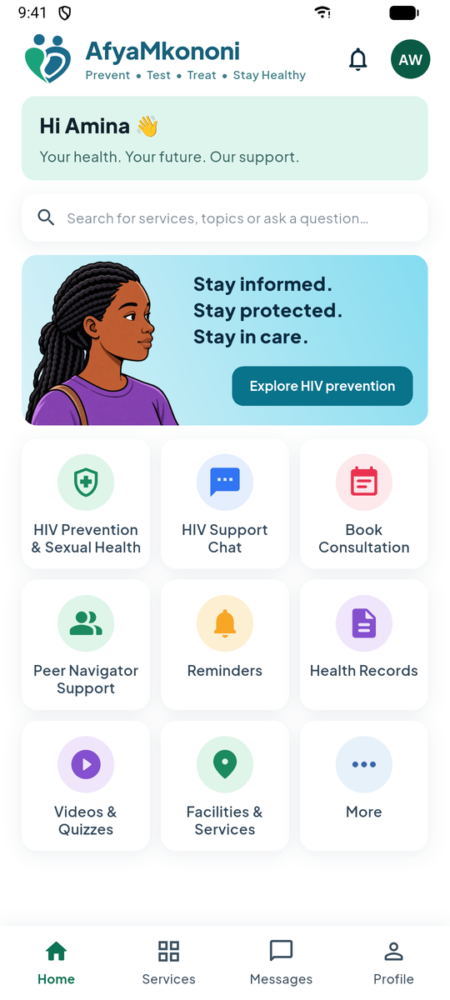
A considered first step
AfyaMkononi gives every question a private place to land, brings in a peer navigator or a doctor when you need one, and keeps your next step close.
How it works
The experience is designed around the moments people actually have: a question, a connection, a decision.
Read short guides on HIV, PrEP and sexual health, or ask a question anonymously, in English or Kiswahili.
Talk to a trained peer navigator, or book a video or chat consultation with a verified doctor.
Reminders, health records and follow-up keep your next step in view.
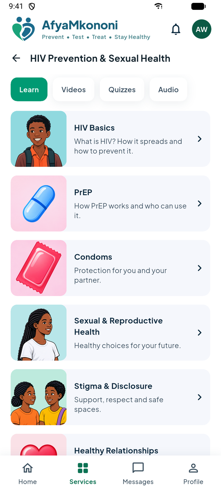
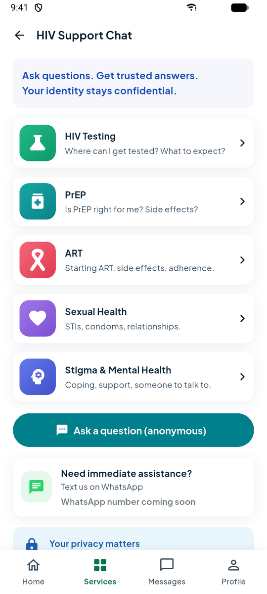
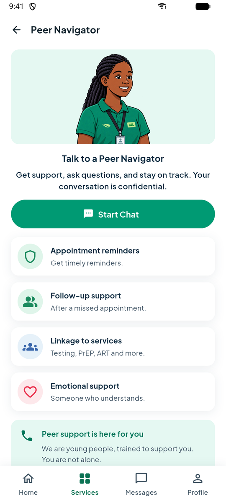
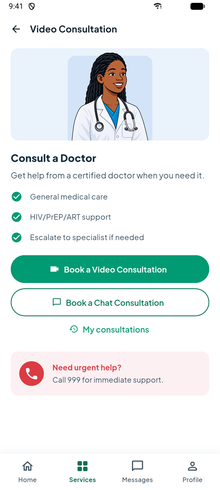
Screens from the current app, shown with sample content.
For patients
AfyaMkononi gives young people and adults in Kenya a private, dignified way to learn, ask, and get care, in English or Kiswahili.
One calm home screen for HIV prevention, the support chat, consultations, peer navigators, reminders, health records, videos and facilities.
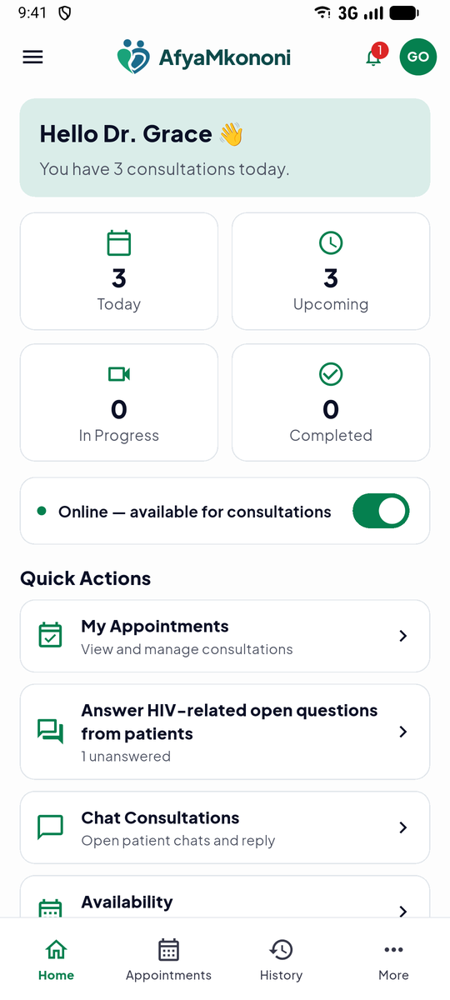
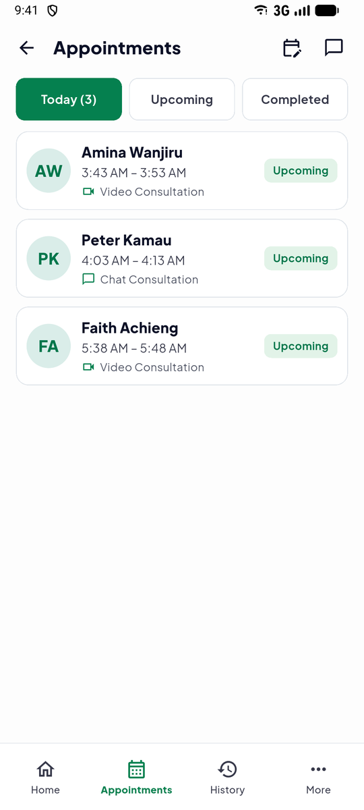
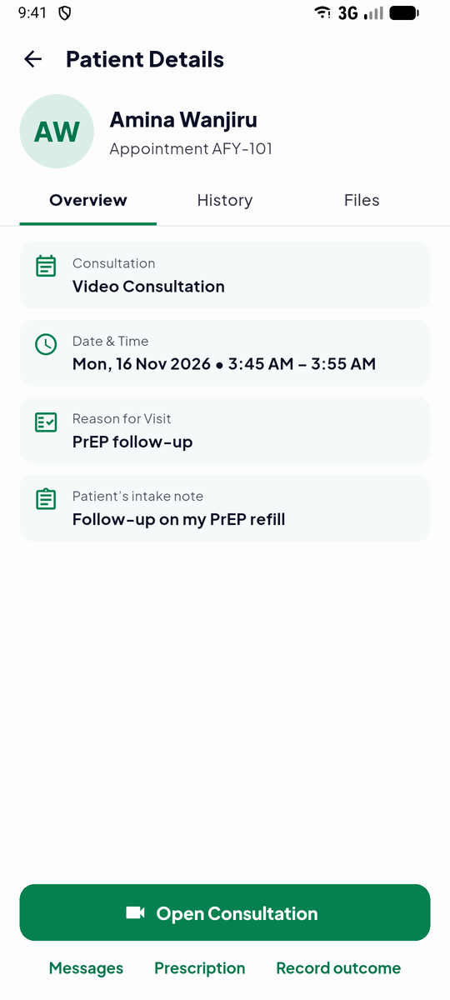
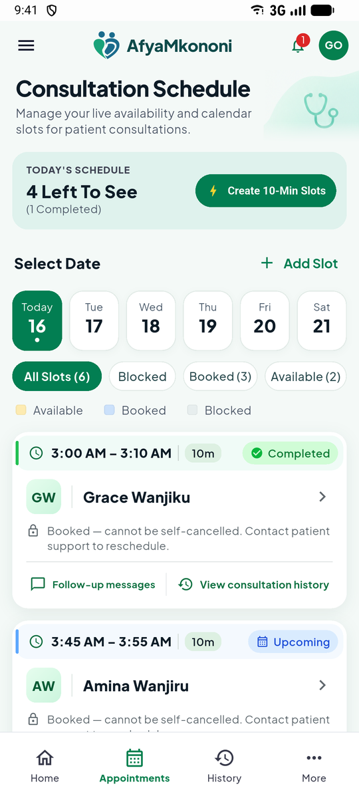
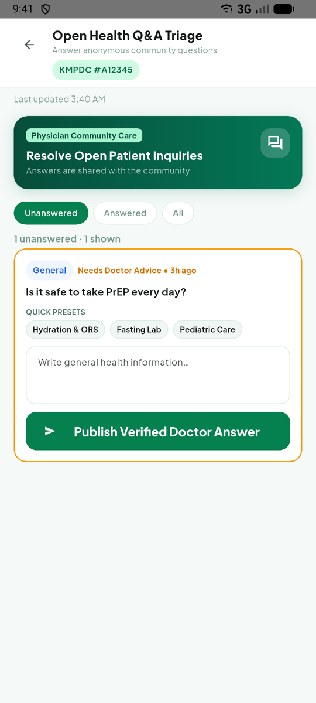
Screens from the current app, shown with sample content.
For doctors
A focused app for KMPDC-registered doctors: a clear queue, patient context before every consultation, your own hours, and a place to answer community questions.
See today’s consultations, what is upcoming and completed, go online or offline, and reach every tool from one screen.
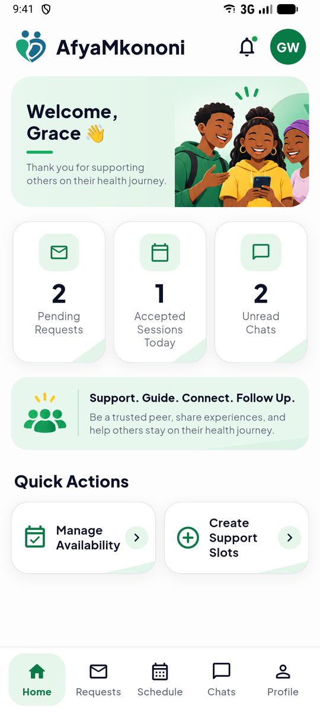
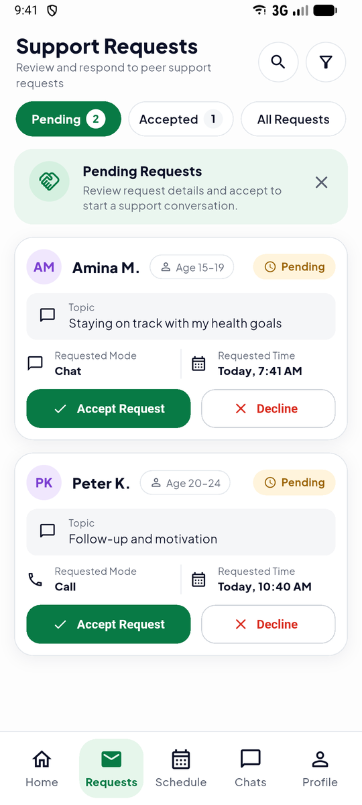
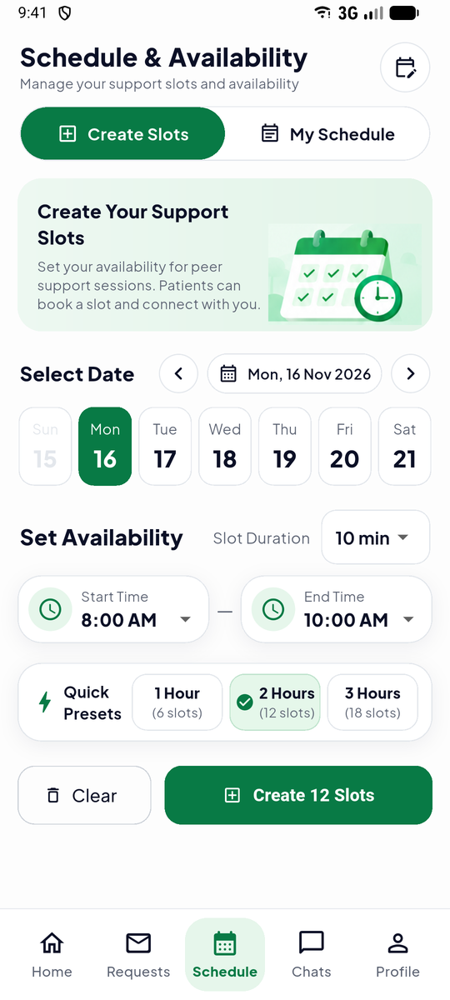
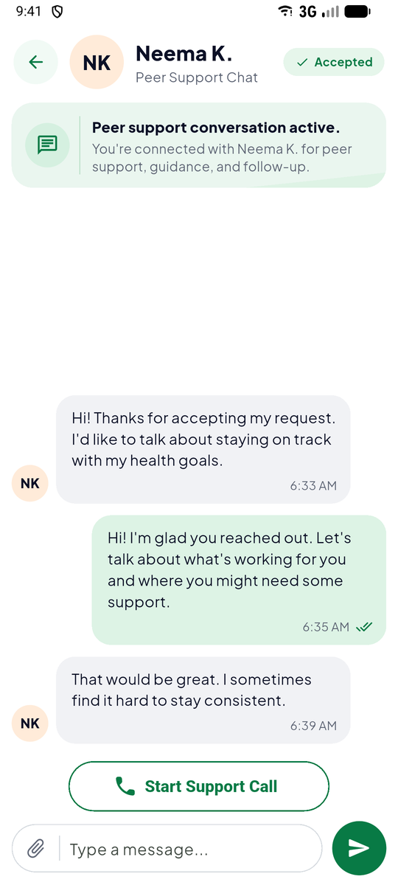
Screens from the current app, shown with sample content.
For peer navigators
Peer navigators use the AfyaMkononi Care app to accept support requests, set their hours and keep confidential conversations going.
Pending requests, today’s sessions and unread chats on one screen, with quick links to manage availability.
Trust & safety
AfyaMkononi treats a health conversation with the care, privacy, and context it deserves.
Clinician and specialist experiences begin with verified KMPDC licensure profiles. Read our Doctor Terms & Verification Protocol →
Review the data-sharing consent needed before moving forward. Read our Patient Telemedicine Consent →
Governed by Kenya Data Protection Act, 2019 principles. Health records are never sold. Explore our Privacy Policy and Data Retention Matrix →
AfyaMkononi is not for emergencies. If someone is in immediate danger, view our Emergency Warning & Casualty Protocol →
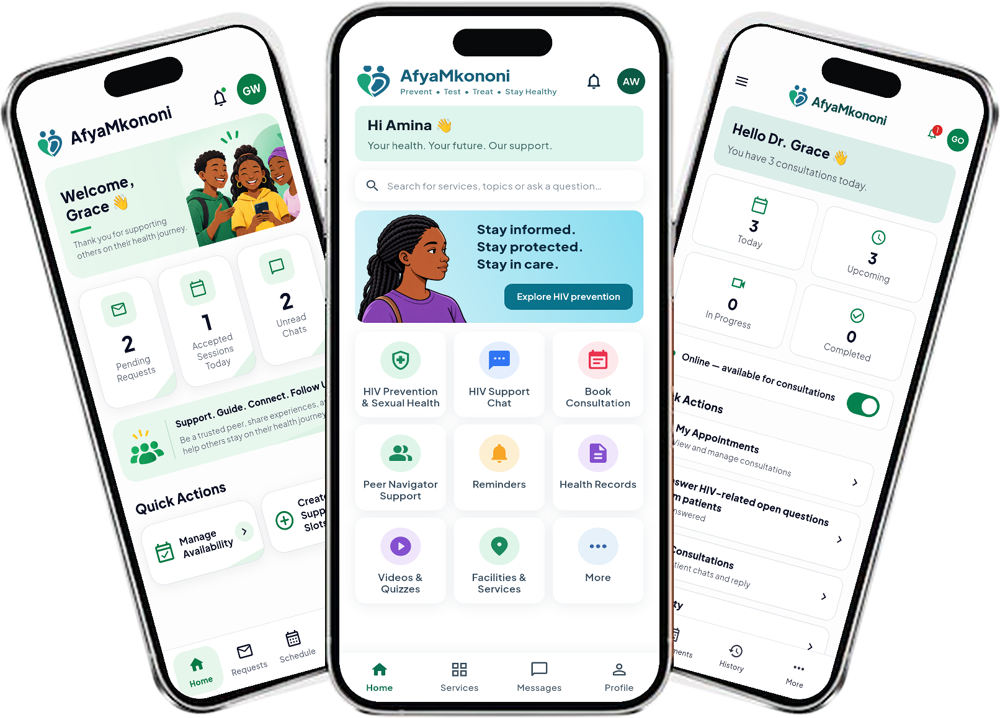
About AfyaMkononi
AfyaMkononi is a Kenya-focused health platform for HIV prevention and care: education, confidential support, peer navigation and doctor consultations, built around privacy and dignity.
Organisational relationship
AfyaMkononi is operated by Global Health Initiatives (GHI) and uses the AfyaMkononi.app platform. RMCL is the platform's technology partner.
Get the app
AfyaMkononi for Android is being prepared for Google Play; the iPhone version is in preparation. For early access or questions, contact our support team.